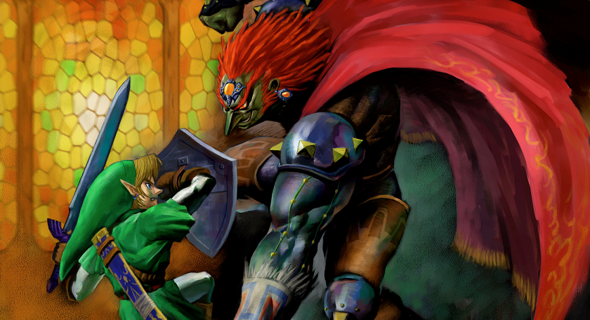
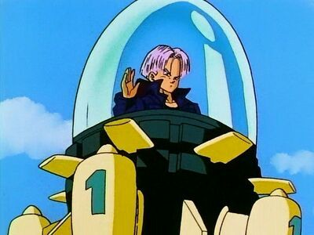
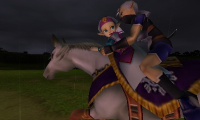
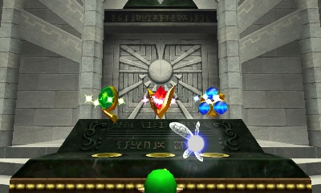
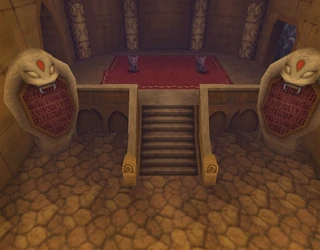
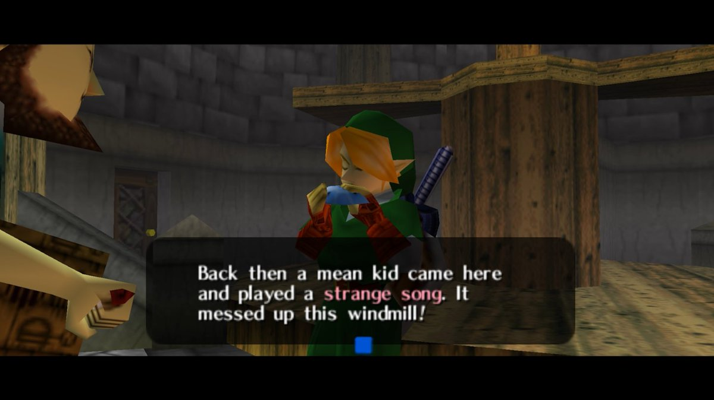
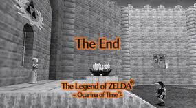

How Ocarina of Time Split the Zelda Timeline
Welcome!

Welcome and thanks for checking out my theory about how the Legend of Zelda: Ocarina of Time
split the Zelda Timeline into three timelines.
After the release of the Hyrule Historia and the establishment of an official timeline, I found myself
discontent with their explanation of time timeline split and went searching for answers. I found some
good, thought provoking theories and expanded on them to make one of my own.
Before I discuss my theory, I think it's worth the time to go through some foundational information about
some fictitious time travel rules and the general synopsis of Ocarina of Time. However, click here if you want to skip
ahead to my theory.
At the bottom of this page, there is a form to leave feedback; I'd love to hear what you think of my theory!
Let's Talk Time Travel
When someone talks about time travel in movies, comics, etc., most people consider two sets of rules; Dragon
Ball Z Rules and Harry Potter Rules.
Dragon Ball Z Rules
Dragon Ball Z Rules are named for a sub-plot in Dragon Ball Z centering around a character Trunks, traveling
back in time in an attempt to prevent a dystopian future. In this future, all of the main characters had been
killed in battle, leaving only him to defend the Earth in a losing battle against two Androids who were far more
powerful than himself.
So, Trunks did what any reasonable person would do: have his genius, inventor mother
create a time machine with which he could go back in time and warn those that had already been killed in his time
about the upcoming danger so that they could prepare.

Ultimately, while he is able to go back and have a very
significant impact on the lives of the heroes of his past, he returned to the same dystopian nightmare. Why?
At the end of the day, Trunks was able to help the others prepare for the impending threat but because he himself
is a product of that disaster, he returns to the same timeline he was a part of. He was only able to create a
new future in which the Androids were not able to wipe out most life on Earth.
The Androids are and forever will be a part of Trunks' past. His struggle against them leads him to travel back
in time in the first place. In a way, the creation of a splintered timeline is kind of the Universe's way of not
creating a time paradox where Trunks is unable to beat the Androids, causing him to go back in time to stop them
in the past, which would have removed the reason for him ever going back in the first place.
Harry Potter Rules
The Harry Potter Rules of time travel are a little different, although both exist to prevent the creation of a
paradox. In the third Harry Potter book, we learn that the brilliant Hermione Granger was given a device called
a time turner. With this, she can travel back in time and take more classes because the only thing better than
school is...more school!

While watching themselves in the past, Hermione and Harry begin wondering why they, well
the past aren't leaving Hagrid's house. It suddenly occurs to Hermione that they left Hagrid's because someone
started throwing rocks through the window. The one who threw them was none other than themselves! Similarly, Harry
realizes that the person who saves himself in the past was not his deceased father as he had suspected, but himself
in the future!
Similarly to DBZ rules, what defines the Harry Potter Rules of time travel is the inability to create a time paradox.
Harry and Hermione's travels through time had a set purpose and involved them interacting with their pasts in ways
that were set in stone. They threw rocks at themselves because they had rocks thrown at them in their own past. If they, for
whatever reason, decided they didn't want to throw rocks at their past selves, they would have created a time paradox in
which the events of their own pasts never come to pass. Who knows what would have happened then? Either way, the perpetual
time loop where you have to preserve the integrity of one single timeline is considered to be Harry Potter Rules of time
travel.
The Legend of Zelda: Ocarina of Time Synopsis
Now that we're all on the same page in terms of the two main sets of time travel rules, let's get into the story of Ocarina
of Time.
The game begins with our hero, Link, learning that some evil-doer has poisoned the Great Deku Tree who presides over the
forest where Link lives. Link is gifted the Spiritual Stone of the Forest and sent to meet Princess Zelda. When they meet,
Zelda shares an ominous dream she has had where darkness befalls the land and Ganondorf, the Gerudo leader, is able to claim
the Triforce from within the Sacred Realm. She then sends Link on a quest to find the other Spiritual Stones so that they
can get the Triforce first.

Once you've found the remaining Spiritual Stones and return to the castle, you see Zelda fleeing
on horseback with her bodyguard. She tosses you the Ocarina of Time, a magical instrument which is needed, along with the
Spiritual Stones, to get into the Sacred Realm from the Temple of Time and claim the Triforce.

With all of the necessary items in hand to open the Door of Time and enter the Sacred Realm, Link heads to the Temple of Time
and opens the Door of Time where he grabs the Master Sword, only to be met by Ganondorf who follows him in and grabs the
Triforce, which splits due to Ganondorf being evil and all that. Link is kept in the Sacred Realm for 7 years in order for him
to grow old enough to wield the Master Sword and combat Ganondorf. With me so far? We're at the time travel-y part!
Now Link is a teenager and ready to combat evil with the Master Sword. He also has the ability to return to his original time
by placing the Master Sword back into the pedestal he got it from.

Throughout the hero's journey, Link can go back and forth all
willy-nilly. The game ends with Link defeating Ganondorf in the future, and having Zelda use the Ocarina of Time to return Link
to before Ganon followed him into the Sacred Realm in order to warn the King before it ever happens.
Are things starting to sound familiar? You're right! That's just like Trunks! So now...how did the timeline split into three?
So How Did It Split?
I know what you're thinking... TRIforce.... three timelines.... Nintendo is making a terrible dad-joke, right? Just to make sure we're
all on the same page let's state the more obvious split. We have one timeline where Link draws the master sword, Ganondorf grabs
the Triforce, the world goes to hell in a hand-basket, an older Link defeats Ganondorf; not unlike Trunks' original timeline. This
timeline outlines the full events of the game.
The second timeline? Well, that's like the timeline that now occurs by Zelda sending back Link to warn the King about Ganondorf. This
is actually what you see in the end scene with Link "first" arriving in Zelda's garden. He tells her that her dream is correct, they
have Ganondorf imprisoned, and then Link goes off looking for Navi and we see the sequel, Majora's Mask. So what about a third timeline?
The Hyrule Historia leaves this to be pretty vague..."The Hero is defeated." That's it!??! But I WASN'T defeated. I beat the game!

Let's revisit what we discussed about Harry Potter Rules. The reason that Harry and Hermione had to do what they did was because
it already happened. If they didn't throw the stone or cast the patronus spell, the events in their own past would no longer happen and
a paradox would have happened. My claim is that there's an event in the game where you create a paradox which is only resolved by a
split timeline.
Throughout the majority of the game, we all zipped back and forth through time to collect heart pieces and so on and explore the world
as an adult and as a child. However, nothing that we do creates a paradox. Usually.
When you get to the Desert Colossus as an adult, you encounter a problem. There is a heavy pillar blocking one path and another path with
an entrance that only a child could fit into. Luckily, you find a warp point right outside so you return to the past as a child, explore the
small entrance and find the Silver Gauntlets which give Link the strength to remove the large pillar from his path.

Obtaining the Silver Gauntlets creates a paradox.
In a place you could never reach as a child, you obtain an item you could never obtain as an adult, needed to move forward as an adult.
In returning to the future with the Silver Gauntlets in hand, you return to an alternate future where the
Silver Gauntlets are in Link's possession and he has everything he needs in order to advance.
What you left behind was an alternate timeline in which the Gauntlets are stuck in a room that Link cannot access and he cannot move further.
It is this abandoned timeline that creates the "Hero is defeated" timeline. Ganondorf now holds the Triforce, but eventually he is defeated
without the Hero of Time and is sealed into the Sacred Realm which he turns into the Dark World. This leads into the events of A Link to the Past.
The last thing to bring up is the Bottom of the Well. At another point in the game, you MUST return to become a child in order to obtain
an item needed to advance as an adult...so why didn't that make another splintered abandoned timeline?
Let's keep in mind why timeline splits occur. You travel through time and alter the world in some way that creates a paradox. Trunks
defeating the Androids in his past, Link getting the Gauntlets in his past... with resources that can only obtained in the future.

When you speak to the weirdo in the windmill in Kakariko Village as an adult and whip out your Ocarina, he goes nuts saying that some
kid with an Ocarina just like that played a song seven years ago that made the windmill go hay-wire. Then he teaches you the Song of Storms.
After that, you go back in time and play the song that he taught you as an adult because you were the kid that he was complaining about.
Just like Hermione learned that she was the one that threw the rock, there is no paradox because those events happened in a timey-wimey
cycle.

What Do You Think?